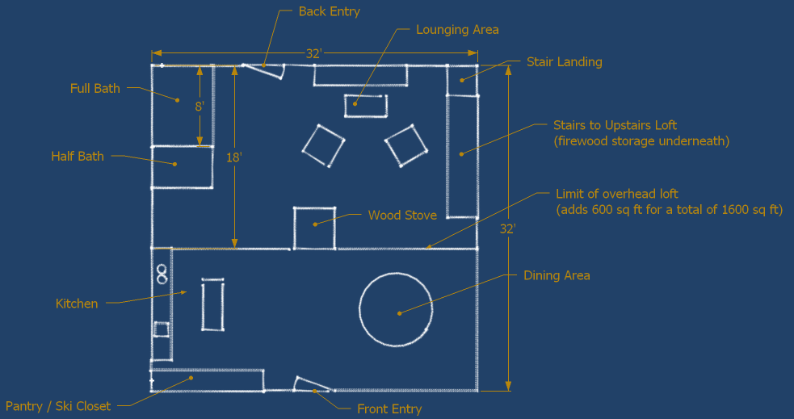
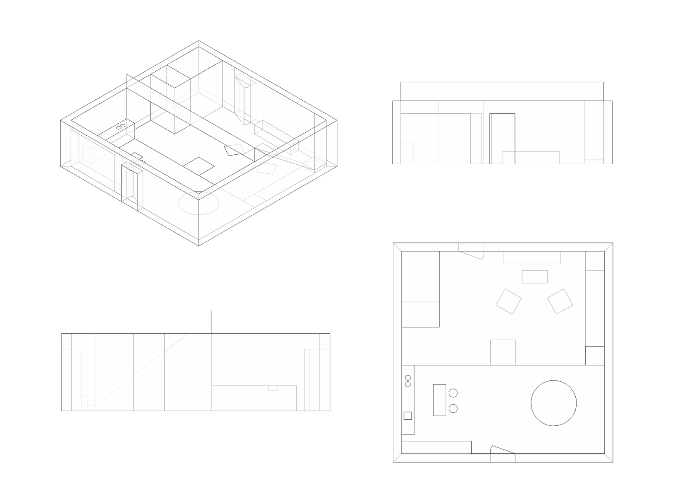
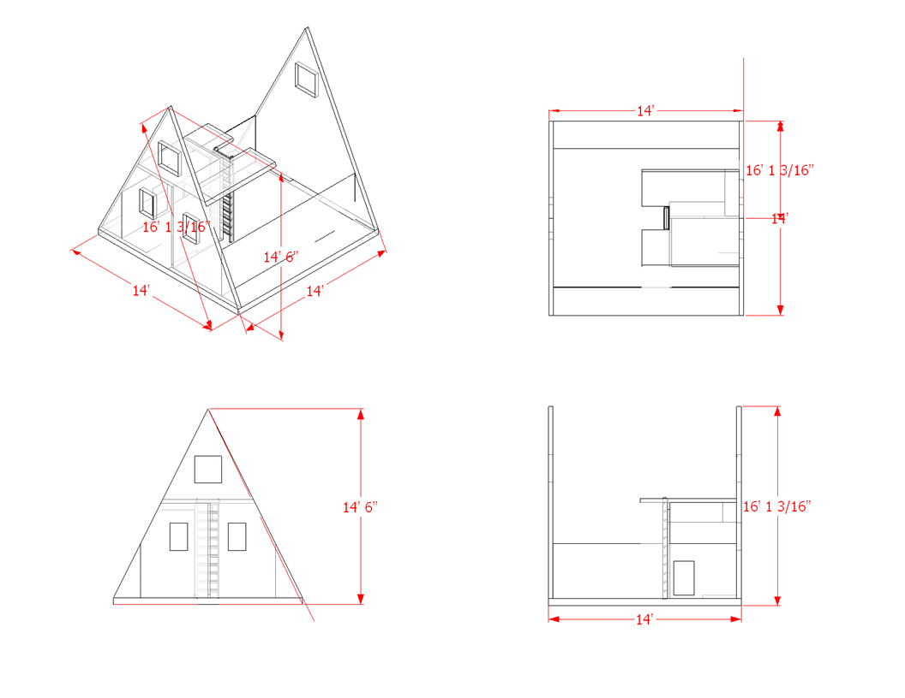
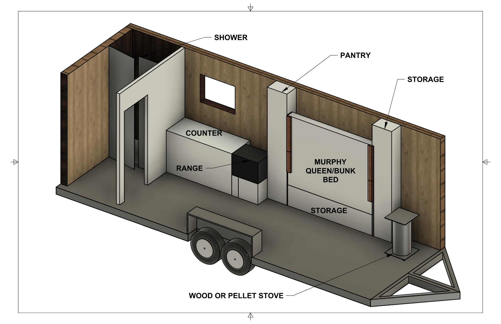

North Woods Cottage
- idea came from discussions during New Year’s get togethers (JoAnna calls it a commune)
- we want a place of our own that is in a remote location (no motor access), on the water, that will give us access to the (state) woods for
- New Year’s hangout
- skiiing
- canoeing
- biking
- hiking
- Brantingham area seems good location for proximity, snowfall, biking and skiing on tug hill plateau, hiking in Thendara, and general proximity to Canoe Wilderness. Or Cape Breton.
- Easy (cheap) to own
- ideally, is teardown/rebuild of existing structure
- keep a low investment and carry no insurance or utility costs
- keep the tax assessor away with blair-witch stick-piles, boooby traps, scary dogs, yellin’, and gun fire (in that order)
- Architecural style should maximize use of simple, renewable, recyclable, biodegradable materials
- Great example design
HayBaleHome
- slab foundation
- concrete floor colored and grooved to look like tiles
- gravel substrate, but need foam for insulation?
- straw bale walls (excellent thermal qualities)
- thatched roof (excellent thermal qualities)
- rubble trench foundation footer (will need to go down to 5’)
- simple floorplan for easy construction
- 1.5 bathrooms
- loft for sleeping space
- beds for 8
- single-pane windows with inner and outer shutters for security, cost, strength, and warmth
- screen doors downstairs and in loft for ventilation
- suspend gear (canoes, bikes, etc) from rafters
- Mechanicals should be off-grid, minimalistic (see off-grid mechanicals vault below)
- heat
- light
- battery and/or oil, candles
- kitchen
- small propane fridge and cooking stove
- grilling in summer
- wood stove in winter
- wine cave built into the side of a hill somewhere nearby (they can burn the house but they cain’t have the booze! Keep guns and a chainsaw and some cans of food in there too)

{kind=link}

{kind=link}
A-Frame Tiny House
Same basic ideas and mechanicals as the HayBaleHome, but:
- Smaller; sleeps only 4 but far easier to site
- Simpler construction:
- Minimal footprint: No foundation, just 4 or 5 concrete tube pilings
- SIP
- high insulation * modular construction * no beams

{kind=link}
Off-grid Mechanicals Vault
Every camp-type structure would benefit from a temporary and small electricity supply and running water. A minimalistic vault design can help simplify the setup, maintenance, and constructability of this. Obviously, every design parameter depends on conservation, reduction of need, usage patterns, etc. A dry temp-stable space is also a great spot for emergency supplies. Avoid storage of any type of fuel though.
- Structure:
- Constructability: Modular size cube built from ICF
- 95% buried for thermal efficiency, low noise, and security
- Accessible and visible top (so no one runs it over) yet protected from the elements and vandalism. Could also site structure on top of it, and size it for lock-box usage as well.
- insulated and dehumidified/heated for consistent temp and low humidity
- Mechanicals
- Well: some people do this but a lot depends on siting for soil type and depth to water table
- Pump:
- 12v
- positive dispacement for high pressure, low volume, no priming
- replaceable
- can be multiplied in series or parallel for flow or pressure
- Pump:
- COTS automotive fuel pump
- Storage:
- Gravity option: Bulk storage ie IBC tote tank
- Pressure Tank: this shouldn’t be large, as a portable water tower should be used for increased capacity
- Manual (from external) and power-actuated ball valves
- Overflow
- Potable treatment:
- Filter: 50 micron fiber followed by 5 micron charcoal to remove sediment, chemicals, and protozoa AND
- UV to remove bacteria and viruses OR
- Storage:
- RO unit
- Power:
- 12v for safety and convenience
- Battery bank
- Charger that can handle solar, alternator, generator or line inputs
- Power:
- Monitoring:
- pressure between all components
- storage level and overflow
- well level and temp
- vault humidity and temp
- battery voltage, charge rate, and temp
- pump current draw, flow rate, and temp
- vault door alarm
- local display and telemetry
Off-Grid Mobile Ski Chalet
A cozy, trailered, home away from home
- Off grid for maximum siting flexibility
- Framed in 1x6 with 1/4” ply walls, rock wool insulation, and cedar shingling exterior
- Custom steel trailer with engineered hardwood flooring over foam
- BIM model
- BOM and costs
